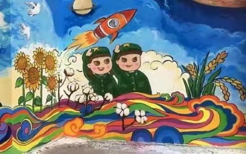
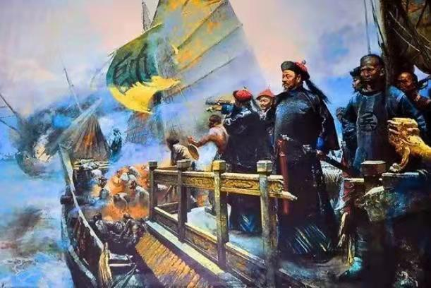
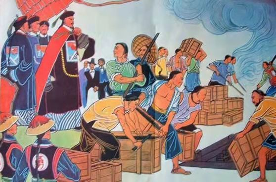
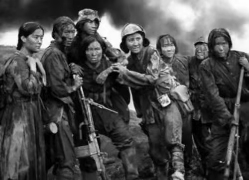
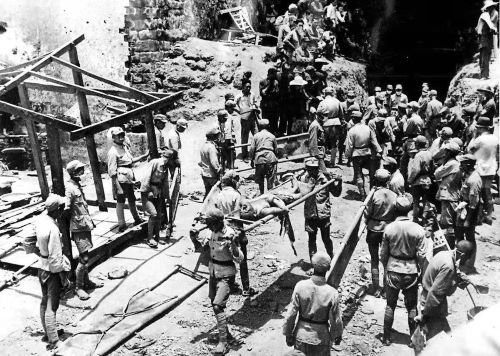

迎接100周年
九月党旗迎风展
我们挺过新冠病毒的肆虐，迎来了新的一年——2021年，建党100周年，这是一个令我自豪而又不平凡的一年。
铭记历史 勿忘国耻
英国对中国发动第一次鸦片战争，签订了第一个不等平等条约 《南京条约》 ，开始沦为 半殖民地半封建社会国家 ，成功打响近代史的开端，林则徐作为近代中国开眼看世界第一人，开始抵御外来鸦片，最后在虎门，实行虎门销烟。
1931年9月18日又为（九一八事变) 是抗日战争的开端，日本在中国蓄意制造并发动的一场侵华战争，是日本帝国主义侵华的开端，是中国抵御日本侵略的一场民族性的全面战争，抗日战争就此打响起来，共14年的抗战。 1945年8月15日 ，日本宣布无条件投降，中国人民抗日战争是近代以来中华民族第一次取得完全胜利的侵略战争和民族解放战争，鼓舞了中国人民的信心，为中华民族伟大复兴赢得了重要的历史转机，中国在国际舞台逐渐受到认可。
 
代码编写：龚将军
文本制作：肖坤明